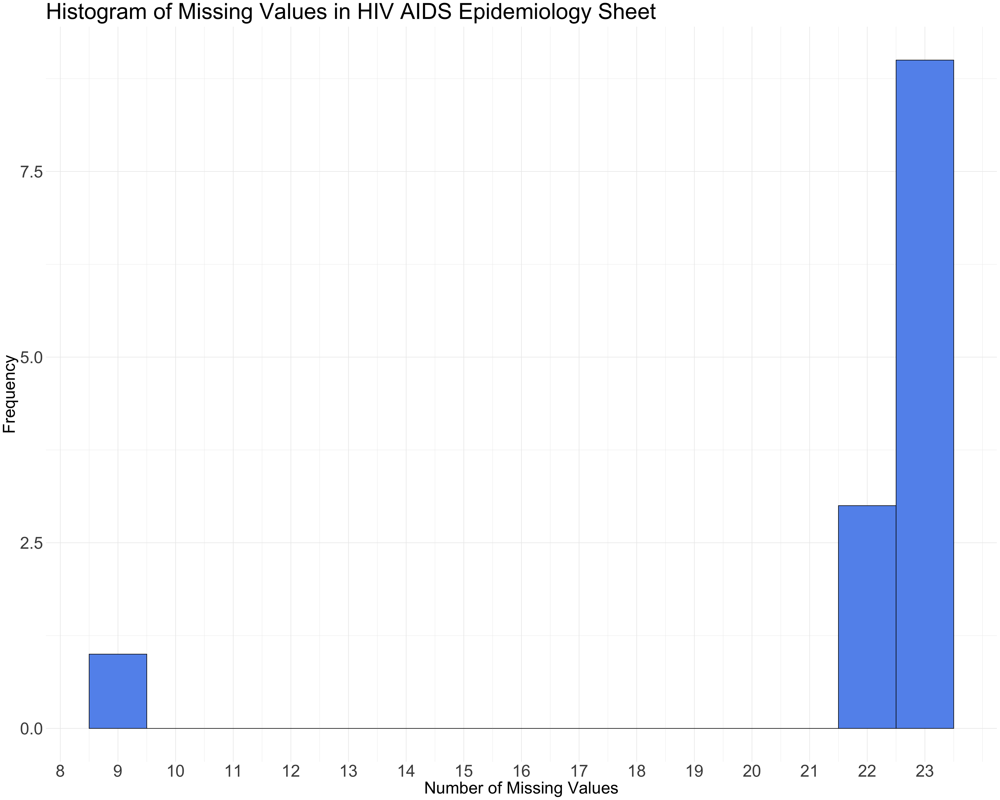

2.1.1.1 UNICEF’s State of the World’s Children Report 2023
The UNICEF report is a comprehensive resource offering extensive data on child health and vaccination. This dataset is pivotal in understanding the global landscape of child immunization, especially in the context of the COVID-19 pandemic. It provides a detailed overview of vaccination rates, types of vaccines administered, and coverage across various demographic segments.
2.1.1.2 WHO Immunization Data
The World Health Organization (WHO) offers a global perspective on immunization, with data encompassing coverage and health indicators. This dataset is crucial for comparative analysis, allowing for a broader understanding of how different regions and countries fare in their vaccination efforts.
2.1.2 Data Collection and Format
2.1.2.1 UNICEF
UNICEF’s data compilation is a rigorous process involving health surveys and reports from national health systems. The data is methodically structured, typically in formats like CSV, which facilitates ease of analysis and integration into various data processing tools.
2.1.2.2 WHO
WHO’s data is sourced from national health departments, ensuring standardization and reliability. The data is made available in user-friendly formats such as CSV and through APIs, which offers flexibility for data analysts and researchers in how they access and utilize the information.
2.1.3 Frequency
Both UNICEF and WHO datasets are updated annually, providing a timely snapshot of the global state of child vaccination. These datasets encompass various dimensions, including but not limited to:
Vaccine Type: Detailed data on different vaccines administered globally.
Coverage Rate: Insights into the percentage of the target population receiving vaccinations.
Geographical Data: Country-wise and region-wise vaccination statistics.
Age Group: Vaccination data segmented by different age groups, which is vital for understanding the demographics of vaccination coverage.
2.1.4 Dimensions
Demographics: Rows (247) x Columns (35)
Child Mortality: Rows (245) x Columns (43)
Maternal And Newborn Health: Rows (262) x Columns (27)
Child Health: Rows (264) x Columns (34)
Adolescent Health: Rows (263) x Columns (35)
HIV AIDS Epidemiology: Rows (240) x Columns (14)
HIV AIDS Intervention Covera: Rows (247) x Columns (18)
Nutrition: Rows (275) x Columns (26)
Nutrition - Breastfeeding: Rows (256) x Columns (26)
Early Childhood Development: Rows (250) x Columns (46)
Education: Rows (250) x Columns (45)
Child Protection: Rows (259) x Columns (44)
Social Protection And Equit: Rows (250) x Columns (15)
WASH: Rows (247) x Columns (45)
Adolescents: Rows (254) x Columns (36)
Children with disabilities: Rows (247) x Columns (43)
Women’s Econ Empowerment: Rows (255) x Columns (42)
Migration: Rows (245) x Columns (19)
2.1.5 Issues
One of the challenges in working with such extensive datasets is the potential for inconsistencies. These may arise due to variations in data collection methods across different countries or changes in reporting standards. Such discrepancies need to be acknowledged and addressed in the analysis to ensure accuracy.
2.1.6 Import Plan
To handle these rich datasets, the project will leverage R, a powerful tool for data analysis. Utilizing packages like tidyverse, the data import process will be streamlined, allowing for efficient handling of Excel files. The choice of R also opens up a plethora of options for data cleaning, manipulation, and visualization, making it an ideal environment for this analysis.
These sources provide the foundational data for this project, offering a comprehensive view of the state of child vaccination globally.
2.2 Research Plan
Each dataset offers unique insights integral to addressing specific questions regarding the impact of the COVID-19 pandemic on global child vaccination rates.
Trends in Global Child Vaccination Rates Pre and Post-Pandemic
Yearly Data Analysis: The datasets provide yearly data on vaccination rates, essential for comparing pre-pandemic (prior to 2020) and post-pandemic (2020 onwards) scenarios.
Impact Assessment: Analyzing the change in vaccination rates over these periods will reveal the direct impact of the pandemic on child vaccination programs.
Regional Disparities in Child Vaccination Coverage
Country-Specific Data: Both datasets contain detailed, country-specific vaccination information, allowing for analysis of regional disparities.
Comparative Analysis: By comparing vaccination rates across different countries and regions, regions most affected by the pandemic can be identified, highlighting areas where recovery efforts might be most needed.
Vaccine-Specific Trends and Coverage
Vaccine Coverage Rates: The datasets detail coverage rates for specific vaccines, vital for understanding which vaccines experienced significant disruptions or maintained steady coverage rates during the pandemic.
Program Vulnerabilities and Strengths: The analysis can reveal specific vulnerabilities or strengths in the vaccination programs for different diseases.
Impact of COVID-19 on Healthcare Prioritization and Resource Allocation
Trend Examination: Examining trends in vaccination coverage alongside data on healthcare resource allocation, if available, can infer the impact of resources diverted to combat COVID-19 on routine vaccinations.
Healthcare Trend Correlation: This aspect requires correlating vaccination data with broader healthcare trends during the pandemic, potentially drawing on additional healthcare system data.
Correlation Between COVID-19 Incidence and Vaccination Rates
Data Supplementation: Supplement datasets with COVID-19 incidence rates to explore correlations.
Impact Understanding: This analysis can highlight the direct and indirect effects of the pandemic on public health services.
Recovery and Resilience in Child Vaccination Programs
Recent Data Analysis: By analyzing the most recent data available post-pandemic, it’s possible to assess signs of recovery or resilience in child vaccination programs.
Resilience Identification: Identify regions or countries where vaccination rates have begun to rebound or have remained stable despite the pandemic.
Equity and Accessibility in Child Vaccination Amidst the Pandemic
Demographic Analysis: The datasets include demographic data, allowing for an examination of vaccination rates among different socioeconomic groups.
Inequality Insights: This analysis can uncover inequalities in vaccine distribution and accessibility that may have been exacerbated by the pandemic.
Long-term Implications of Pandemic on Child Health
Trend Extrapolation: Long-term trends can be extrapolated from the available data to predict potential future impacts on child health due to the pandemic.
Pattern Analysis: Analyze patterns in the data that may indicate lasting effects of the pandemic on child vaccination and overall health.
In Summary, we can perform below steps for analysis:
Handling Missing Values:
Identify and quantify missing values in the datasets.
Apply appropriate techniques like imputation or exclusion, depending on the missing data pattern.
Handling Non-Numeric Data:
Convert non-numeric data, such as country names or vaccine types, into an analyzable format.
Integrate non-numeric information effectively into the analysis.
Descriptive Statistical Analysis:
Conduct descriptive analysis to understand basic data features.
Use visualizations to illustrate descriptive statistics.
Trend Analysis and Comparative Studies:
Perform trend analysis to observe changes in vaccination rates, especially pre- and post-COVID-19.
Conduct comparative studies between different regions, countries, and vaccines.
Correlation and Regression Analysis:
Use correlation analysis to explore relationships between different variables.
Apply regression analysis for prediction and impact analysis.
2.3 Missing value analysis
Code
library(readxl)# Load the Excel filefile_path <-"./data/SOWC-2023-Statistical-tables-All-EN.xlsx"xls <-excel_sheets(file_path)# Initialize a list to store the presence of missing values in each sheetsheets_with_missing_values <-list()# Loop through each sheet in the Excel filefor (sheet in xls) { data <-read_excel(file_path, sheet = sheet)# Check if there are any missing valuesif (any(is.na(data))) { sheets_with_missing_values[[sheet]] <-sum(is.na(data)) }}
New names:
New names:
New names:
New names:
New names:
New names:
New names:
New names:
New names:
New names:
New names:
New names:
New names:
New names:
New names:
New names:
New names:
New names:
• `` -> `...2`
• `` -> `...3`
• `` -> `...4`
• `` -> `...5`
• `` -> `...6`
• `` -> `...7`
• `` -> `...8`
• `` -> `...9`
• `` -> `...10`
• `` -> `...11`
• `` -> `...12`
• `` -> `...13`
• `` -> `...14`
• `` -> `...15`
• `` -> `...16`
• `` -> `...17`
• `` -> `...18`
• `` -> `...19`
• `` -> `...20`
• `` -> `...21`
• `` -> `...22`
• `` -> `...23`
• `` -> `...24`
• `` -> `...25`
• `` -> `...26`
• `` -> `...27`
• `` -> `...28`
• `` -> `...29`
• `` -> `...30`
• `` -> `...31`
• `` -> `...32`
• `` -> `...33`
• `` -> `...34`
Code
# Print the list of sheets with missing valuessheets_with_missing_values
$`1. Demographics`
[1] 4450
$`2. Child Mortality`
[1] 5463
$`3. Maternal And Newborn Health`
[1] 3274
$`4. Child Health`
[1] 4784
$`5. Adolescent Health`
[1] 4611
$`6. HIV AIDS Epidemiology`
[1] 282
$`7. HIV AIDS Intervention Covera`
[1] 1729
$`8. Nutrition`
[1] 3532
$`9. Nutrition - Breastfeeding`
[1] 3093
$`10. Early Childhood Development`
[1] 5447
$`11. Education`
[1] 5803
$`12. Child Protection`
[1] 5653
$`13. Social Protection And Equit`
[1] 652
$`14. WASH`
[1] 5827
$`15. Adolescents`
[1] 4729
$`16. Children with disabilities`
[1] 5509
$`17. Women's Econ Empowerment`
[1] 4764
$`18. Migration`
[1] 480
Code
library(ggplot2)library(viridis)
Loading required package: viridisLite
Code
library(reshape2)library(readxl)# Load the Excel filefile_path <-"./data/SOWC-2023-Statistical-tables-All-EN.xlsx"sheet_name <-"6. HIV AIDS Epidemiology"# Reading the sheetdata <- readxl::read_excel(file_path, sheet = sheet_name)
# Calculate the missing datamissing_data <-is.na(data)missing_data_matrix <-as.matrix(missing_data)# Convert the data to long format for ggplotlong_missing_data <-melt(missing_data_matrix, varnames =c("Row", "Variable"))# Create a Heatmap for Missing Dataggplot(long_missing_data, aes(x = Variable, y = Row)) +geom_tile(aes(fill = value), colour ="white") +scale_fill_viridis(name ="", discrete =TRUE, labels =c("Present", "Missing")) +theme_minimal() +labs(title ="Heatmap of Missing Data in HIV AIDS Epidemiology Sheet", x ="Variable", y ="Row Number") +theme(axis.text.x =element_text(angle =90, hjust =1))

Code
# Histogram of Missing Valuesmissing_counts <-colSums(missing_data)missing_data_histogram <-data.frame(Variable =names(missing_counts), MissingCount = missing_counts)ggplot(missing_data_histogram, aes(x = MissingCount)) +geom_histogram(binwidth =1, fill ="cornflowerblue", color ="black") +scale_x_continuous(breaks =seq(0, max(missing_counts), by =1)) +theme_minimal() +labs(title ="Histogram of Missing Values in HIV AIDS Epidemiology Sheet", x ="Number of Missing Values", y ="Frequency")
Code
missing_per_row <-rowSums(missing_data)missing_pattern_plot_data <-data.frame(Row =1:nrow(data), MissingCount = missing_per_row)ggplot(missing_pattern_plot_data, aes(x = Row, y = MissingCount)) +geom_point(aes(color = MissingCount), alpha =0.6) +scale_color_viridis(name ="Count of Missing Values") +theme_minimal() +labs(title ="Pattern of Missing Values per Row in HIV AIDS Epidemiology Sheet", x ="Row Number", y ="Count of Missing Values")
Code
time_series_data <-data.frame(RowIndex =1:nrow(data), MissingCount = missing_per_row)ggplot(time_series_data, aes(x = RowIndex, y = MissingCount)) +geom_line() +theme_minimal() +labs(title ="Time-Series of Missing Values in HIV AIDS Epidemiology Sheet",x ="Row Index (Time)", y ="Count of Missing Values") +scale_x_continuous(breaks =seq(1, nrow(data), by =10))